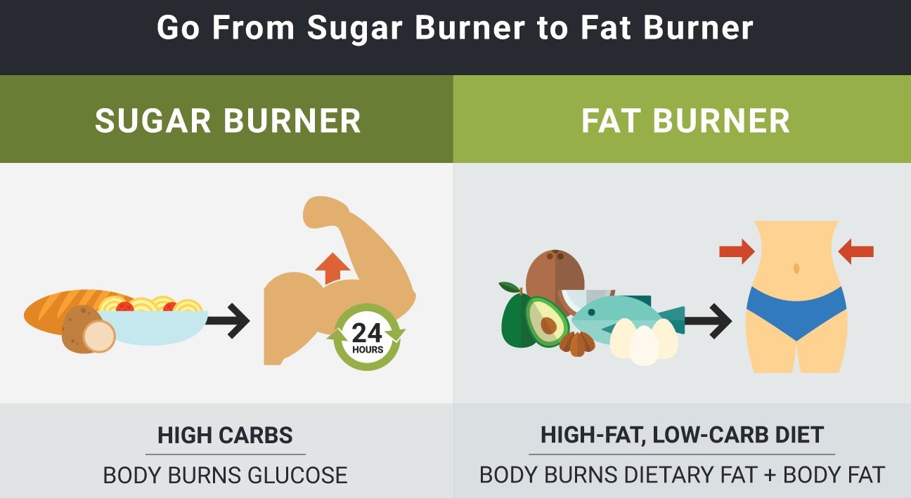

The keto diet is a low carb, high fat diet. This leads to the body producing ketones in the liver to be used as energy rather than glucose. Typically when you eat something high in carbs, your body will produce glucose. When your body needs energy, it will convert glucose into energy. Your body will continue to use glucose as its primary energy source since it is so readily available. This leads to fat being stored rather than burned for energy. The keto diet lowers the intake of carbs, which puts the body into a state known as ketosis. Being on a keto diet makes it easier to access stored fat to burn it off.
Ketosis is when your body starts to break down fat instead of carbohydrates for your primary source of energy. When lowering the glucose available, the body will look for an alternative source of fuel(fat). When the body starts this process, it will start to produce ketones. Ketones are used as an alternative source of energy.
There are different ways to see if you're in ketosis. You can measure your ketones level via urine strips but it can be expensive. Instead, you can monitor some changes that let you know you're on the right track.
When you eat something that is high in carbs, your body produces glucose and insulin.
The problem with this is that when glucose is used as a primary energy source, fats are not needed for energy and therefore are stored. Because your body uses glucose as it's main energy source the glucose that is converted into fat doesn't get used. When your body runs out of glucose it tells your brain you need more which leads to you reaching for a quick snack like a candy bar or chips rather than just burning the fat that you have stored.
So what needs to be done...
Become a fat burner instead of a sugar burner.
There are many different benefits that come along with being on this keto diet. Below, you'll find a short list of those benefits.
The ketogenic diet makes your body start to use fat as energy rather than carbs, so its obvious you'll lose some weight. The idea behind eating more fat and reducing carb intake, it makes you feel less hungry compared to other diets. The longer you are integrated into the diet, you become a fat-burning machine!
Keto naturally lowers blood sugar because of the food you eat and the decrease in glucose intake. Keto has been shown to have huge benefits for people that are pre-diabetic or have Type II diabetes. **If you’re pre-diabetic or have Type II diabetes, you should seriously consider a ketogenic diet.
Ketones are a great source of fuel for the brain. When you lower carb intake, you avoid big spikes in blood sugar. Together, this can result in improved focus and concentration. Many people partake in keto simply to help mental performance
By giving your body a better and more reliable energy source, you will feel more energized during the day. Fats are shown to be the most effective molecule to burn as fuel. On top of that, fat is naturally more satisfying and ends up leaving us in a full state for longer.
It is common to experience improvements in your skin when switched to the ketogenic diet. Low-carb diets have been shown to calm inflammation, inflammation is what makes acne so red, sore, and tender.
A keto diet has shown to improve triglyceride levels and cholesterol levels most associated with arterial buildup. More specifically low-carb, high-fat diets show a dramatic increase in HDL and decrease in LDL particle concentration compared to low-fat diets. Some blood pressure issues are associated with excess weight, which is a bonus since keto tends to lead to weight loss.
Like any other diet, you can't just eat whatever you want. The plus with the keto diet is that once you find yourself in ketosis your cravings for things you can't eat just disappear. It's important to understand that carbohydrates are not only in the junk foods that you love, but also some of the healthier foods that you enjoy.
For example, on keto you need to avoid wheat (bread, pasta, cereals), starch (potatoes, beans, legumes) and fruit.
Here are ten great vegetables to have on hand at ALL times when on the keto diet. They are sorted by how useful they are in keto cooking. **All numbers are net carbs per 3½ ounces
Typically, fruit can be perceived as super healthy and people will eat them in excess. Fruits are healthy but do have tons of natural sugars in them(which means carbs). Now you can still eat fruits but in moderations and stick to specific fruits.
Below are the best options, ranked by carbs per serving(one medium-sized fruit or half a cup). **All numbers are net carbs